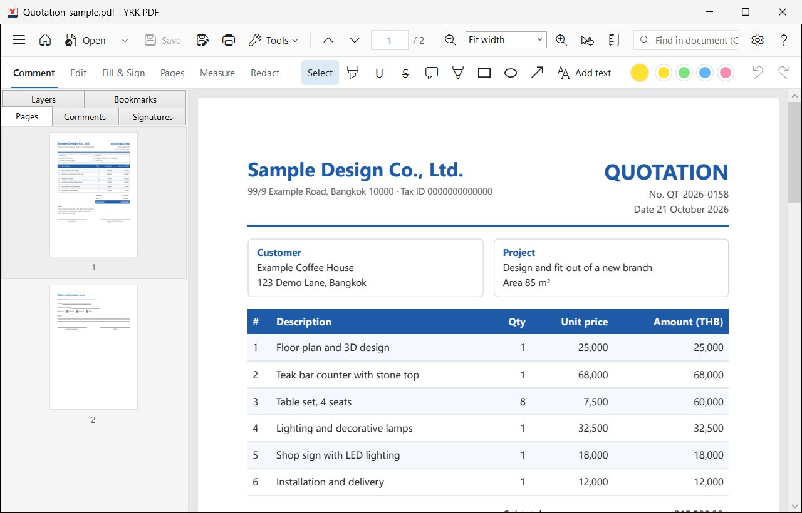
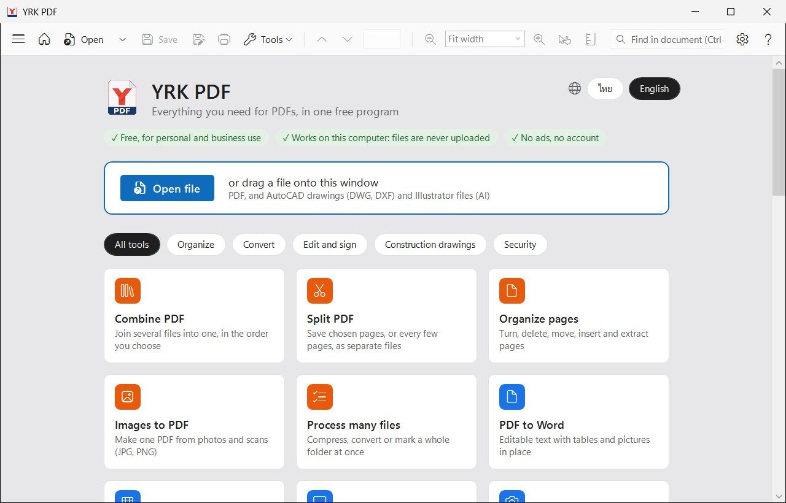
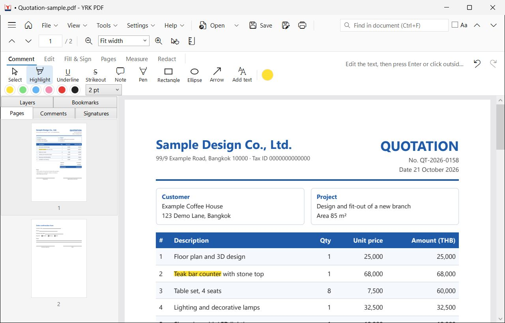
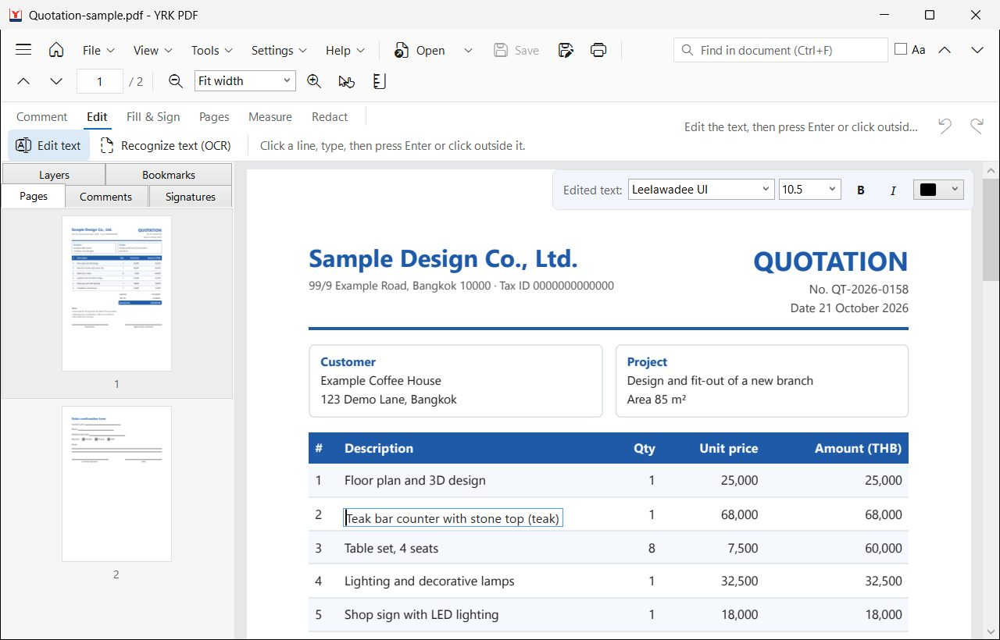
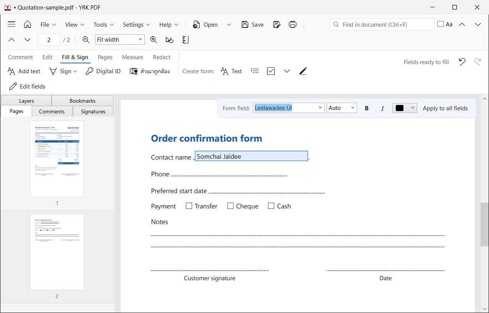
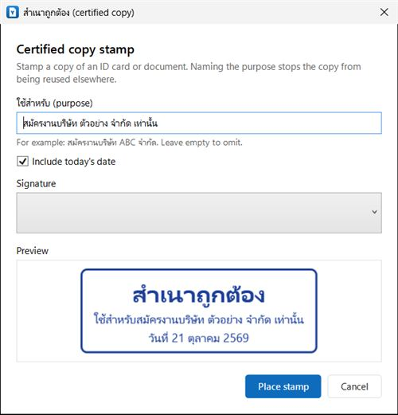
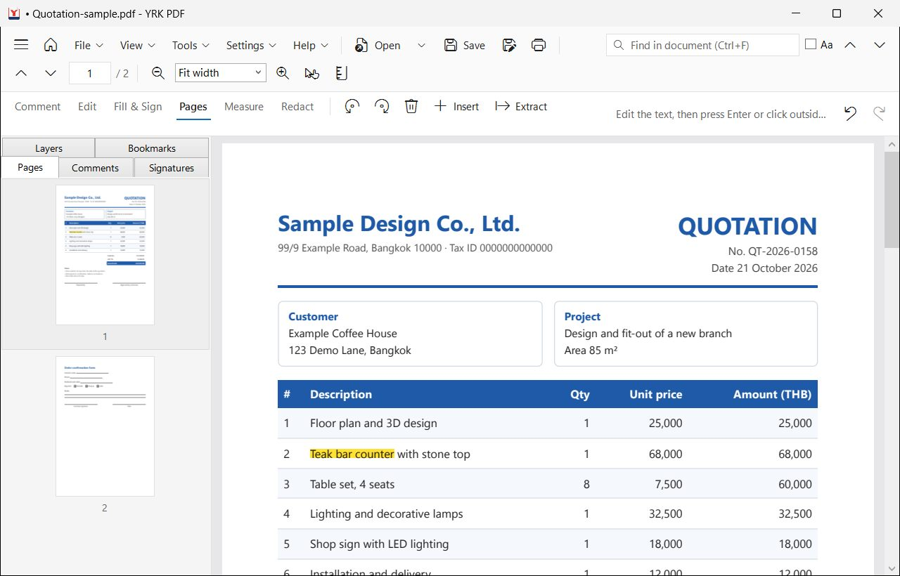
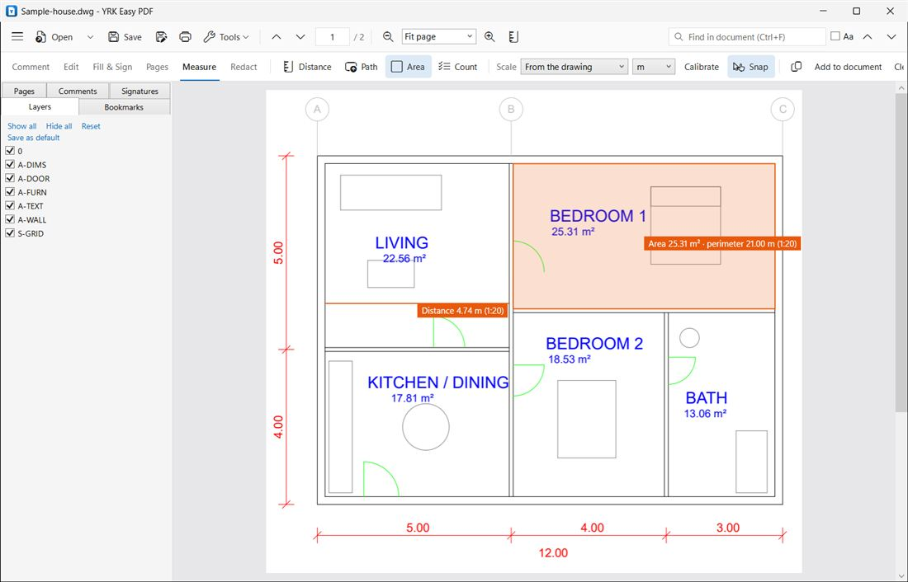

A free PDF program for Windows: read, edit, fill in forms, sign, organize pages, convert files and measure drawings. Everything runs on your own computer.

Version {{version}} · yr-ken426.github.io/yrk-easy-pdf-release
YRK PDF is free, with no ads and no account, and it never sends your files anywhere.
Opening files
Drag a PDF from File Explorer onto the window.
Or press Ctrl+O, or the Open button. The arrow next to it lists recent files.
Open several files at once: each one gets its own tab.
Besides PDF, AutoCAD drawings (DWG, DXF) open too.
Start page
With no file open, or after the house button, the start page shows every tool, grouped by task. Click a card to start.

The start page: every tool, grouped by task
The main window
Top row: the File, View, Tools, Settings, Help menus (Alt and the first letter, such as Alt+F), then Open, Save, Print, page buttons, zoom and the search box.
Second row: the task tabs Comment · Edit · Fill & Sign · Pages · Measure · Redact, each with its own tools. Undo and Redo are at the far right.
Sidebar: page thumbnails, the comment list, signatures, drawing layers and bookmarks. The three-line button at the top left shows or hides it.
Language:Settings → Language / ภาษา switches between English and Thai.
Reading and finding
Zooming and moving around
Zoom with the + and − buttons, or hold Ctrl and turn the mouse wheel. The zoom box has Fit page and Fit width.
Drag the page with the Hand tool (H), or hold Space and drag, or drag with the middle mouse button.
Go to a page by typing its number in the page box, or click its thumbnail in the sidebar.
Finding and copying
Press Ctrl+F, type, then Enter or F3 for the next result. Tick Aa to match upper and lower case.
Drag over text with the Select tool and press Ctrl+C to copy it.
Thai stored with its vowels or tone marks out of order (common in files from Excel) is put right when you copy and search.
Scanned files: if search and copy find nothing, the pages are pictures. Run Recognize text (OCR) first (chapter 7).
Highlights and comments
The Comment tab is for reviewing, marking up and leaving notes. Other PDF programs, Adobe Acrobat included, show them too.

Every comment tool has its name under the icon
Highlight, Underline, Strikeout: choose the tool and drag over text.
Note: click where it belongs, then type in the sidebar.
Pen, Rectangle, Ellipse, Arrow: drag on the page to draw.
Add text: click and type.
Colour and line width are on the same row.
Changing comments
With the Select tool, drag a comment to move it, or drag a corner to resize it.
Delete removes it; Ctrl+Z brings it back.
All comments are listed in the sidebar's Comments tab; click one to go there.
Editing text
Change words in the PDF itself, Thai included. The new words are real text that can be searched and copied.

Click a line, or a cell of a table, and type
On the Edit tab, choose Edit text.
Click the line to change. In a table only that cell is taken; the rest of the row stays where it is.
Type, then press Enter or click somewhere else. The new text goes into the page at once.
Not right? Ctrl+Z brings the old text back; Esc while typing cancels.
Fonts
The document's own font is used when it is installed on this PC. Otherwise a similar font is chosen and sized to look as tall. While typing, the bar at the top of the page changes the font, size, bold, italic and colour.
The file changes when you save: while you work the changes live in a temporary copy. Your file only changes on Ctrl+S.
Forms and signatures
Filling in a form
If the PDF has form fields, click one and type. Thai shows correctly, and the form can be filled on in Adobe Acrobat as usual.
Making your own form
Fill & Sign tab → Create form: choose a field type, such as text, list or check box.
Drag a box on the page, name the field and press Add field.
Press Enter or click outside: the field can be filled straight away.
Edit fields changes or deletes fields.

A new field, ready to fill before saving
Signing
Press Sign and create a signature: draw it with the mouse or a pen, type your name, or import a photo of it on white paper (the white is removed).
Click the page to place it, then drag to move or resize it.
If you keep the signature for next time, it is stored encrypted on this PC.
Certified true copy
สำเนาถูกต้อง stamps "สำเนาถูกต้อง" (certified true copy) on a copy of an ID card or document, with your signature. Write what the copy is for, such as a job application, so it cannot be reused elsewhere, and add today's date if you like.

The certified copy stamp with its purpose and signature
Rubber stamps
Rubber stamp has the stamps offices use every day: approved, received, paid, checked, original, copy, urgent, cancelled and confidential, with the date (Thai Buddhist year or English). Choose Thai, English, or both (the Thai word with the English one under it). Pick another date, change the words, colour and shape, or add small lines under the word, such as your company name or "by ......", then click Save to my stamps to use it again.
Click on the page to place the stamp; drag to move or resize it. Its words are saved as real text, so they can be searched and copied.
Digital signatures (Digital ID)
A digital signature (PAdES) proves who signed and shows whether the document changed afterwards. Press Digital ID and choose an ID on a USB token, add a .pfx file from your certificate authority, or create your own. Choose whether the signature shows on the page and whether to add a trusted timestamp (needs internet). Signatures in a file are listed in the sidebar's Signatures tab.
Signature type:Approval for an ordinary signature, or Certify as the author to decide what may still happen afterwards (form filling and signing, comments as well, or no changes at all). Only the first signature of a document can certify it.
Long-term validation data: stores your certificates and their revocation lists in the file (PAdES B-LT), so the signature can be checked years later, even after the certificate expires. Best together with a trusted timestamp.
Pages and files

The Pages tab: rotate, delete, insert and extract
Rotate, delete, insert, extract: select thumbnails in the sidebar (hold Ctrl for several), then use the Pages tab.
Move pages: drag a thumbnail to its new place.
Combine files:Tools → Combine files…; pick the files and put them in order.
Split:Tools → Split this PDF… saves chosen pages, or every few pages, as separate files.
Images to PDF:Tools → Images to PDF… makes one PDF from photos and scans (JPG, PNG).
Watermark and page numbers: add a watermark, header, footer or page numbers from the Tools menu.
Converting and compressing
PDF to Word
Editable text with tables and pictures in place
PDF to Excel
Tables as cells; amounts as numbers you can add up
PDF to PowerPoint
One slide per page, looking just like the PDF
PDF to images
Each page as a PNG or JPG picture
Start from the cards on the start page, or File → Export.
Compress PDF
Tools → Compress this PDF…, then choose:
Recommended, 150 dpi: good for email and most upload forms; text stays sharp.
Smallest file, 96 dpi: for strict size limits such as 1–2 MB.
High quality, 220 dpi: for printing.
A new copy is always saved; the original does not change. Photos and scans shrink a lot; files of plain text shrink little.
Recognize text (OCR)
Makes scans searchable and copyable, in Thai and English. It is on the Edit tab and in the Tools menu.
PDF/A for archiving
The long-term archive format many offices ask for: Tools → Save as PDF/A (for archiving)…
Many files at once
Tools → Process many files… compresses, converts or watermarks a whole folder in one go.
Digital signatures: compressing or converting a digitally signed file makes the signature in the copy invalid. Do it before signing.
Drawings: DWG, measuring, counting
Opening AutoCAD drawings
DWG and DXF files open without AutoCAD. The drawing is shown like a PDF, at its scale, and layers can be shown or hidden in the sidebar's Layers tab.

Areas and lengths on a drawing, at the drawing's scale
Measuring
The Measure tab has Distance, Path, Area and Count.
Scale:From the drawing uses the scale stored in the file; or pick one; or press Calibrate and drag over a length you know.
Snap: catches line ends and middles of the drawing. Hold Shift for 45° steps.
For an area or a path, click each corner, then press Enter or double-click to finish.
Click a result's label to select it, then drag a corner to correct it. Delete removes it.
Add to document keeps the measurements in the file as comments.
Counting
Name a type, such as "Door" or "Light", and click each one on the drawing. Numbered marks are added; copy the list into Excel or save it as a file.
Comparing versions
Tools → Compare with another version… shows what changed between two revisions.
Rulers:Ctrl+R. They show millimetres on paper, or the drawing's units at its scale.
Passwords and redaction
Adding and removing a password
File → Protect with password… locks the whole file, or only printing and copying.
File → Remove password protection… saves a copy without the password (you need the password to open it).
Redact (black out for good)
On the Redact tab, drag over what must go, or press Mark search results to mark every place with the word in the search box.
Check the marks, then press Apply redactions.
The text, pictures and lines under the marks are removed, not just covered, and the result is saved as a new file.
Privacy
Everything happens on your computer: no uploads, no usage statistics, no AI. The only internet use is the update check, which can be turned off in Settings → Privacy and safety…
Saving, printing and updates
SaveCtrl+S: the new file is written in full first and only then replaces the old one, so a problem halfway cannot damage it.
Save a copyCtrl+Shift+S: a new file; the original stays as it was.
UndoCtrl+Z and RedoCtrl+Y: for text edits, comments, form fields, measurements and page changes.
PrintCtrl+P.
A dot • before the file name means there are unsaved changes. Closing always asks first.
Updates
If update checks are allowed, a new version is downloaded for you and a button offers to restart into it. Every version is signed by the developer; a file whose signature does not check out is never installed. Check now in Settings → Updates…
Keyboard shortcuts
The same list is in the program: Help → Keyboard shortcuts.
Keys
What it does
F1
Open this guide
Ctrl+O
Open
Ctrl+S
Save
Ctrl+Shift+S
Save a copy
Ctrl+P
Print
Ctrl+W
Close file
Ctrl+Shift+T
Reopen closed file
Ctrl+Z / Ctrl+Y
Undo / Redo
Ctrl+C
Copy selected text
Delete
Delete the selected item
Esc
Cancel
Ctrl+F
Find in document
F3 / Shift+F3
Next / previous result
Ctrl++ / Ctrl+-
Zoom in / out
Ctrl+0 / 1 / 2
Fit page / actual size / fit width
Ctrl+Home / End
First / last page
H, or hold Space
Hand tool
Ctrl+R
Rulers
Alt+FVTSH
File, View, Tools, Settings, Help menus
Shift (measuring)
Keep lines at 45° steps
Enter (measuring)
Finish an area or path
Common problems and contact
Windows shows a SmartScreen warning when installing
The program does not have a paid developer certificate yet. Press More info, then Run anyway. Only download from the official website.
Search and copy find no text
The file is a scan. Run Recognize text (OCR) first.
Edited text is in a different font
The document's font is not installed on this PC, so a similar one is used. Install that font, or choose one in the bar at the top of the page.
Saving fails
The file may be open in another program. Your work is then saved under a new name next to it, so nothing is lost.
Contact
Help → Suggestions and problems…
Help → Common questions (website)
Website: yr-ken426.github.io/yrk-easy-pdf-release
YRK PDF is made by YRK LAB — Your Reliable Kit · Free software under the Apache-2.0 license